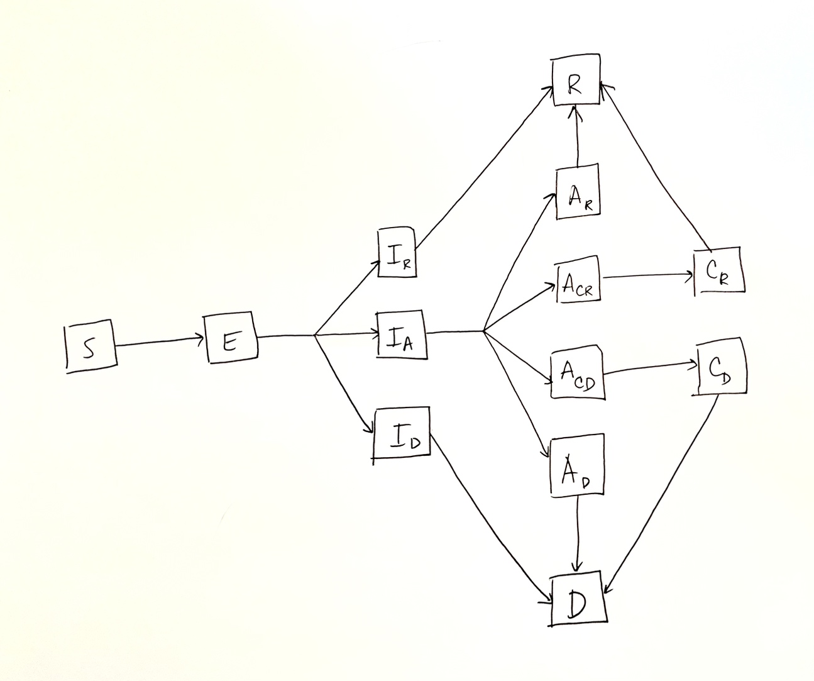

old-and-young model
This version of the model features a basic epidemiological structure stratified with two age groups: young and old. The epidemiological compartments are:
- \(S\): susceptible
- \(E\): exposed
- \(I\): infected
- \(H\): hospitalized
- \(R\): recovered
- \(D\): dead
The flows within each age group are as follows:

The solid lines indicate flows between compartments and the dashed lines indicate when a compartment is involved in calculating a flow rate.
Age-based transmission
The force of infection for age group \(i\), \(\lambda_i\), which is the per-capita rate of flow of age \(i\) susceptibles into the exposed class (of the same age), is modelled as
\[ \lambda_i = \sum_{j} c_{ij} \beta_j I_j/N_j \]
where
- \(c_{ij}\) is the contact rate of a susceptible in age group \(i\) with an infected in age group \(j\),
- \(\beta_j\) is the transmission rate for age group \(j\),
- \(I_j\) is the number of infectious individuals in age group \(j\),
- \(N_j\) is the population size of age group \(j\).
Input values
There are several input values for the base model. Some inputs are
stratified by age group (with suffix _y for young and
_o for old). We use the generic suffix _j to
denote inputs for age group j in the list below:
-
state: a named list of the initial state for the simulation, where the name of each state follows the pattern[epi-state]_j -
params: a named list of model parameters used to compute flow rates, including-
transmission_j: transmission rate, denoted by \(\beta_j\) in the force of infection above, -
c_ij: contact rate, denoted by \(c_{ij}\) in the force of infection above, -
progression_j: rate of flow from exposed to infectious, -
recovery_j: rate of flow from infectious to recovered, -
hospitalization_j: rate of flow from infectious to hospitalized, -
discharge_j: rate of from from hospitalized to recovered, -
deathH_j: rate of flow from hospitalized to dead, -
deathI_j: rate of flow from infectious to dead.
-
Optional (scenario-specific) input values are documented in the next section.
Available scenarios
change-transmission scenario
This scenario simulates two changes in the age-dependent transmission rates on specific days.
Intervention days are specified through the
intervention.day input value. The default values yield
changes on days 40 and 50.
Scalar multiples of the original transmission rates are specified via
the trans.factor.young and trans.factor.old
input values, for the young and old, respectively. The default values
reduce the transmission rate to 50% then 10% of the original value
across both age groups.
hosp model
This version of the model features a basic epidemiological structure stratified with five-year age groups up to age 80. The epidemiological compartments are:
- \(S\): susceptible
- \(E\): exposed
-
\(I_x\): infected, with fate \(x\), where \(x\) is either:
- \(R\), recovered without hospitalization,
- \(H\), hospitalized, or
- \(D\), dead
-
\(A_y\): hospitalized in acute
care, with fate \(y\), where \(y\) is either:
- \(R\), recovered after acute care only
- \(CR\), critical care with a prognosis of recovery
- \(CD\), critical care with a prognosis of death
- \(D\), death after acute care only
- \(R\): recovered
- \(D\): dead
The flows within each age group are as follows:

TODO: SHOW PARAMETRIZATION OF EACH FLOW RATE
The solid lines indicate flows between compartments and the dashed lines indicate when a compartment is involved in calculating a flow rate.
Age-based transmission
The force of infection for age group \(i\), \(\lambda_i\), which is the per-capita rate of flow of age \(i\) susceptibles into the exposed class (of the same age), is modelled as
The force of infection for occurs in an age-based way, as a proxy for
population heterogeneity. The transmission rate for susceptibles of age
i and infectious individuals of age j is
calculated as
\[ \lambda_i = \tau \sum_{j} p_{ij} \hat{c}_j I_j/N_j \]
where
- \(\tau\) is the transmissibility of the pathogen, quantified as the proportion of contacts between a susceptible and an infectious individual that yield transmission (independent of age),
- \(p_{ij}\) is the proportion of age group \(i\)’s contacts that occur with age group \(j\),
- \(\hat{c}_j\) is the average contact rate for individuals in age group \(j\) (across all ages),
- \(I_j\) is the number of infectious individuals in age group \(j\) (at a given time)—totalled across infectious subcategories \(I_R\), \(I_A\), \(I_D\),
- \(N_j\) is the population size of age group \(j\).
The average contact rate vector (\(\hat{c}\)) and the contact proportion matrix (\(\left[p_{ij}\right]\)) are both generated using a weighted average of four setting-based component contact matrices, derived by Mistry et al (2021), which reflect contacts in households, workplaces, schools, and community (all other contacts outside of the three previous settings). The weights are the average overall contact rate per setting. This weighted average generates an overall contact matrix. The row sums of this matrix give the average contact rate vector, \(\left[\hat{c}_j\right]\), and the row-normalized version of this matrix is the contact proportion matrix (\(\left[p_{ij}\right]\)).
Input values
There are several input values for the model, summarised by the following table:
| Variable | Description | Stratified by age group? | Value | Units |
|---|---|---|---|---|
state |
The initial state for the simulation, stratified by epidemiological category and age group | Yes | See source | Number of individuals |
transmissibility |
Transmissibility proportion, denoted by \(\tau\) in the force of infection described previously | No | 0.015 | - |
days_incubation |
Average length of the incubation period (across all infection types) | Optional | 6 | days |
days_infectious_I_R |
Average length of the infectious period in days for individuals with a prognosis of recovery without hospitalization | Optional | 10 | days |
days_infectious_I_A |
Average length of the infectious period in days for individuals with a prognosis of hospitalization | Optional | 6 | days |
days_infectious_I_D |
Average length of the infectious period in days for individuals with a prognosis of death without hospitalization | Optional | 10 | days |
days_LOS_acute_care_to_recovery |
Average length of stay in acute care for individuals with a prognosis of recovery without critical care | Optional | 15 | days |
days_LOS_acute_care_to_critical |
Average length of stay in acute care for individuals with a prognosis of critical care admission | Optional | 10 | days |
days_LOS_acute_care_to_death |
Average length of stay in acute care for individuals with a prognosis of death without critical care | Optional | 15 | days |
days_LOS_critical_care_to_recovery |
Average length of stay in critical care for individuals with a prognosis of recovery | Optional | 15 | days |
days_LOS_critical_care_to_death |
Average length of stay in critical care for individuals with a prognosis of death | Optional | 10 | days |
prop_hosp |
Proportion of all infections that are hospitalized | Optional | 0.05 | - |
prop_nonhosp_death |
Proportion of infections that end in death without hospital care | Optional | 0.1 | - |
prop_hosp_crit |
Proportion of hospitalizations that receive critical care | Optional | 0.05 | - |
prop_hosp_death |
Proportion of hospitalizations that end in death | Optional | 0.01 | - |
setting.weight |
Vector of weights for the setting-specific component contact matrices, where each weight gives the average contact rate per setting across all ages, as described previously | No | school = 11.41 work = 8.07 household = 4.11 community = 2.79 | Number of contacts per individual |
Optional (scenario-specific) input values are documented in the next section.
Available scenarios
change-contacts scenario
This scenario enables the simulation of an intervention that affects the age-based contact patterns starting on a specified day from the start of the simulation (the “intervention day”).
The intervention day is specified with the
intervention.day input value. The default value simulates a
stay-at-home order starting on day 25.
An intervention involves using a new contact matrix starting on the
intervention day, which is generated with new setting weights, specified
in the setting.weight.new input value. The default values
reflect closing all schools, 50% of workplaces, and reducing community
contacts by 75% from the default setting.weight input value
(see above).
The user can also change overall transmissibility of the pathogen
starting on the intervention day to some scalar multiple of the original
value via the trans.factor input value. The default values
include trans.factor = 1, so no change to underlying
transmissibility.
five-year-age-group model
This version of the model features a basic epidemiological structure stratified with five-year age groups up to age 80. The epidemiological compartments are:
- \(S\): susceptible
- \(E\): exposed
- \(I\): infected
- \(H\): hospitalized
- \(R\): recovered
- \(D\): dead
The flows within each age group are as follows:
The solid lines indicate flows between compartments and the dashed lines indicate when a compartment is involved in calculating a flow rate.
Age-based transmission
The force of infection for age group \(i\), \(\lambda_i\), which is the per-capita rate of flow of age \(i\) susceptibles into the exposed class (of the same age), is modelled as
The force of infection for occurs in an age-based way, as a proxy for
population heterogeneity. The transmission rate for susceptibles of age
i and infectious individuals of age j is
calculated as
\[ \lambda_i = \tau \sum_{j} p_{ij} \hat{c}_j I_j/N_j \]
where
- \(\tau\) is the transmissibility of the pathogen, quantified as the proportion of contacts between a susceptible and an infectious individual that yield transmission (independent of age),
- \(p_{ij}\) is the proportion of age group \(i\)’s contacts that occur with age group \(j\),
- \(\hat{c}_j\) is the average contact rate for individuals in age group \(j\) (across all ages),
- \(I_j\) is the number of infectious individuals in age group \(j\) (at a given time),
- \(N_j\) is the population size of age group \(j\).
The average contact rate vector (\(\hat{c}\)) and the contact proportion matrix (\(\left[p_{ij}\right]\)) are both generated using a weighted average of four setting-based component contact matrices, derived by Mistry et al (2021), which reflect contacts in households, workplaces, schools, and community (all other contacts outside of the three previous settings). The weights are the average overall contact rate per setting. This weighted average generates an overall contact matrix. The row sums of this matrix give the average contact rate vector, \(\left[\hat{c}_j\right]\), and the row-normalized version of this matrix is the contact proportion matrix (\(\left[p_{ij}\right]\)).
Input values
There are several input values for the model. Some inputs are
stratified by age group (with suffix .lb[digit], where
[digit] denotes the lower bound of the age group. For
example, .lb50 denotes the 50-54 age group. We
use the generic suffix .j to denote inputs for age group
j in the following table:
| Variable | Description | Default value | Units |
|---|---|---|---|
state |
A named list of the initial state for the simulation,
where the name of each state follows the pattern
[epi-state].j
|
See source | Number of individuals |
transmissibility |
Transmissibility proportion, denoted by \(\tau\) in the force of infection described previously | 0.2 | - |
days_incubation |
Average length of the incubation period | 6 | days |
days_infectious |
Average length of the infectious period in days | 8 | days |
prop_hosp |
Proportion of infections that are hospitalised | 0.02 | - |
prop_IFR_all |
Infection Fatality Ratio across all infections | 0.034 | - |
prop_IFR_hosp |
Infection Fatality Ratio across hospitalised infections | 0.187 | - |
days_hosp |
Average length of hospital stay | 15 | days |
setting.weight |
Vector of weights for the setting-specific component contact matrices, where each weight gives the average contact rate per setting across all ages, as described previously | school = 11.41 work = 8.07 household = 4.11 community = 2.79 | Number of contacts per individual |
Optional (scenario-specific) input values are documented in the next section.
Available scenarios
change-contacts scenario
This scenario enables the simulation of an intervention that affects the age-based contact patterns starting on a specified day from the start of the simulation (the “intervention day”).
The intervention day is specified with the
intervention.day input value. The default value simulates a
stay-at-home order starting on day 25.
An intervention involves using a new contact matrix starting on the
intervention day, which is generated with new setting weights, specified
in the setting.weight.new input value. The default values
reflect closing all schools, 50% of workplaces, and reducing community
contacts by 75% from the default setting.weight input value
(see above).
The user can also change overall transmissibility of the pathogen
starting on the intervention day to some scalar multiple of the original
value via the trans.factor input value. The default values
include trans.factor = 1, so no change to underlying
transmissibility.